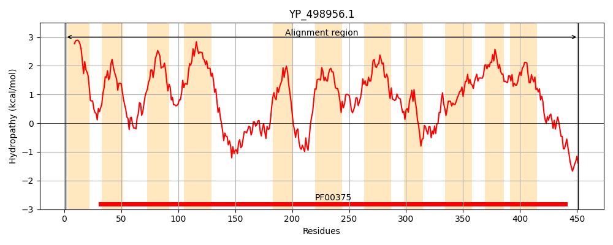
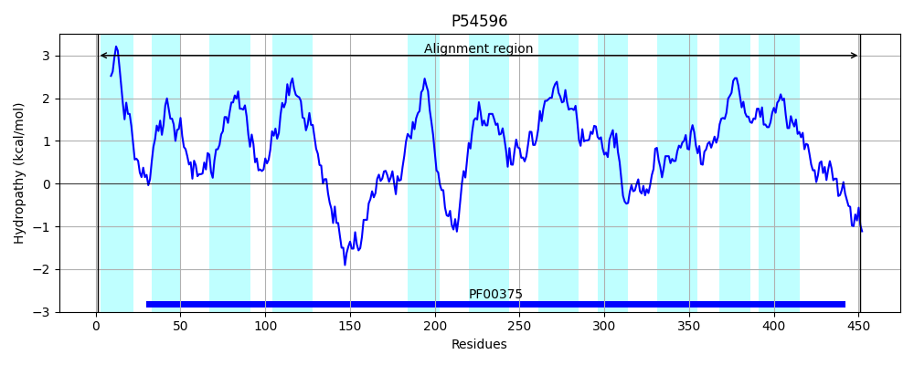
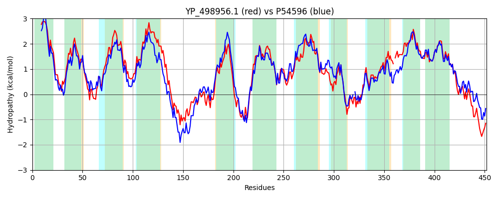

Hit Accession: P54596
Hit TCID: 2.A.23.1.4
Hit Description: gnl|BL_ORD_ID|10949 gnl|TC-DB|P54596|2.A.23.1.4 Hypothetical symporter yhcL - Bacillus subtilis.
Mach Len: 452
e:0.000000
Query TMS Count : 11
Hit TMS Count: 11
TMS-Overlap Score: 11.450000
Predicted Substrates:CHEBI:5584;hydron, CHEBI:4052;cystine, CHEBI:9095;selenocystine
BLAST Alignment:
Score: 1427 , Bit scores: 554 bits, E-value: 0.0e+00, Alignment length: 452, Percentage identity: 62
Query: 1 MNAFLTLINIIVLVIFIVILHMMARKHISFAKRVFTALGIGIVFGVLLHLIYGTHSNVITSTSDWFNIVGQGYVALLQMIVMPLIFISIVAAFTKIQIGEKFAKIGSLIFIFLIGTVTIAAIVGVVYALVFGLDASTINLGNAEQARGSEIAKQAKDLTAHTLPQQILELLPKNPFLDFTGQRATSTIAVVIFASFIGFAYLRVARKQPDHGELLKRAIDAIYSLVMAIVTFVLRLTPYGVLAIMANTLSTSDFGAIWTLGKFLIASYAALITMYIIHLIILSLLGISPIRYVKKTLEVLIFAFTSRSSAGALPLNVQTQTRRLGVPEGIANFAATFGLSIGQNGCAGIYPAMLAIMVAP-VANVEIDLQFIVTLIAVVIISSFGVAGVGGGATFASILVLSTLNLPVALAGVLISVEPLIDMGRTALNVNDSMLAGTGTAKLTKHWDKDTF 451
M L ++++ +L + I+ L +M +KH+SF+KRVFTALG+GIVFG L LIYG SN++ T+DWFNI G GYV LLQM+VMPL+FISI+ AFTK+++ + KI LI L+ T +AA VG+ AL F L A ++ G+ E +RG E+ ++++D+TA TLPQQI+ELLP NPFLDFTG R TSTIAVVIFA+F+G A+L V KQP+ E K+ +DA+Y++VM +VT +LRLTPYGVLAIM T++TSD +I LG F+IASYAALITM+IIHL++L+ G++P+ Y+KK + VL+FAFTSRSSAGALPLN++TQ R +GVPEGIANFA +FGLSIGQNGCAGIYPAMLA+M+AP V D FI+T+IAVV ISSFGVAGVGGGATFA++LVLS+LN+PVALAG+LIS+EPLIDMGRTALNV+ SM +G T+K+TK D+ F
Sbjct: 1 METLLVVLHVFILFLLILGLFVMQKKHVSFSKRVFTALGLGIVFGFALQLIYGPTSNIVIQTADWFNIAGGGYVKLLQMVVMPLVFISILGAFTKLKLTKNLGKISGLIIGILVATTAVAAAVGIASALSFDLQAIQVDQGSTELSRGQELQQKSEDMTAKTLPQQIVELLPGNPFLDFTGARPTSTIAVVIFAAFLGVAFLGVKHKQPEQAETFKKLVDAVYAIVMRVVTLILRLTPYGVLAIMTKTIATSDLDSILKLGMFVIASYAALITMFIIHLLLLTFSGLNPVIYLKKAVPVLVFAFTSRSSAGALPLNIKTQ-RSMGVPEGIANFAGSFGLSIGQNGCAGIYPAMLAMMIAPTVGQNPFDPVFIITVIAVVAISSFGVAGVGGGATFAALLVLSSLNMPVALAGLLISIEPLIDMGRTALNVSGSMTSGLITSKVTKEIDQGAF 451 | Protein Hydropathy Plots: |
|---|
|  |  |
Pairwise Alignment-Hydropathy Plot:
|
|---|
|  |